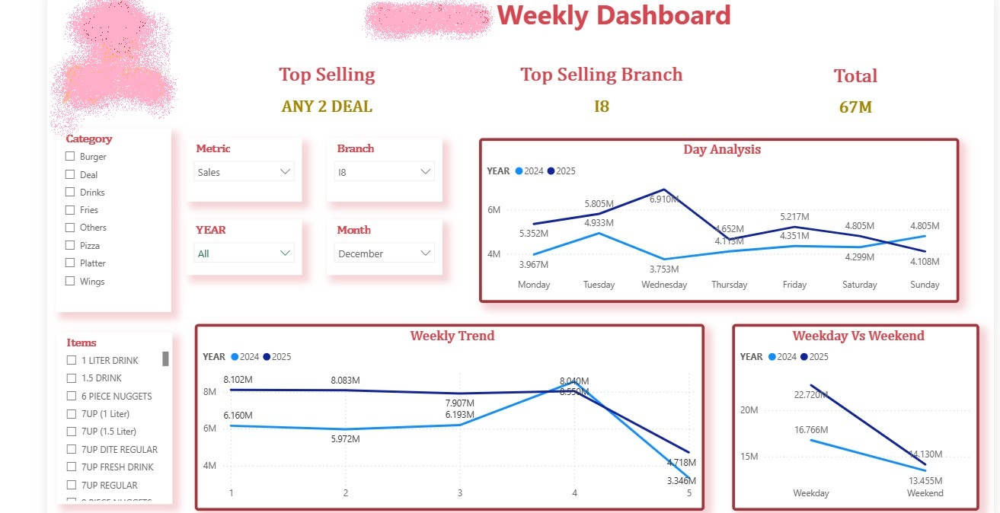
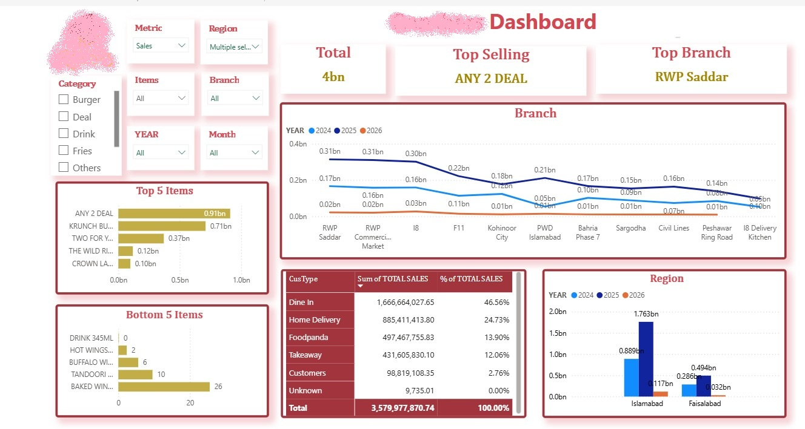
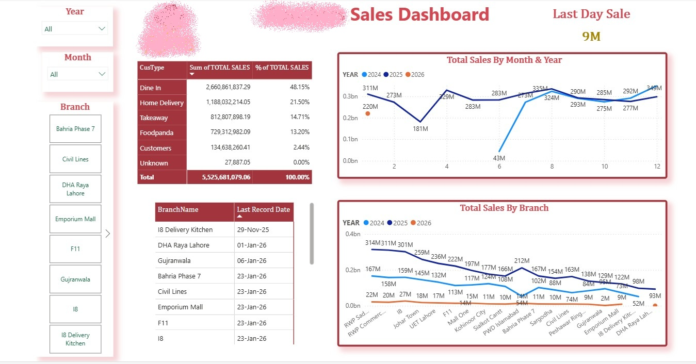
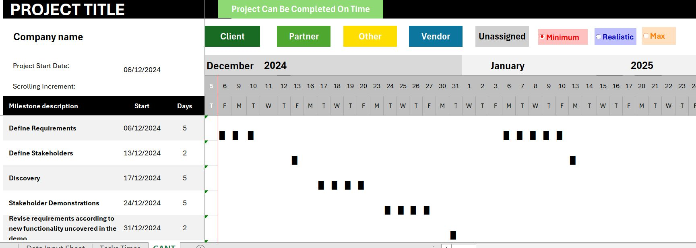

Sadia Asghar
About Me
I am a Business Intelligence and Data Analyst with experience in Power BI, SQL, Tableau, SAP ERP, Excel VBA, and Python. I specialize in transforming complex operational and enterprise data into actionable insights through dashboards, reporting automation, and data visualization. I have worked with large-scale datasets, including Power BI solutions connected to SQL databases, and developed automation systems for inventory reporting and sales processing. My focus is on improving business decision-making through efficient reporting systems, KPI tracking, and data-driven analysis.
Skills
Projects
Power BI Enterprise Dashboard (SQL + BI Reporting)
Developed enterprise-level Power BI dashboards connected to SQL databases containing over 11 million records to monitor sales performance, inventory trends, branch operations, and key business KPIs. Designed interactive reporting solutions for management and operational teams, enabling real-time business visibility and data-driven decision-making. Optimized dashboard performance by implementing efficient data refresh strategies and data modeling techniques to improve responsiveness when working with large-scale datasets.
Key Focus:
- SQL Database Integration (11M+ Records)
- KPI Tracking & Executive Reporting
- Sales, Inventory & Operational Analytics
- Data Modeling & Performance Optimization
- Interactive Dashboard Development
- Branch & Regional Performance Monitoring
- Business Intelligence & Decision Support
- Enterprise Reporting Automation

Weekly Sales Performance Dashboard – KPI Tracking, Trend Analysis & Operational Insights

Executive BI Dashboard – Branch Performance, Regional Analysis & Revenue Monitoring

Enterprise Sales Analytics Dashboard – SQL-Powered Reporting on 11M+ Records
Tableau Business Storytelling Dashboard
Designed a Tableau dashboard focused on business storytelling and KPI-driven analysis. The project transformed raw operational data into meaningful visual insights to support strategic decision-making. Instead of static reporting, the dashboard was structured around answering business questions and highlighting trends, performance gaps, and operational insights.
Key Focus:
- Data storytelling and visualization design
- KPI-based business analysis
- Executive reporting dashboards
- Insight-driven decision support
Shop Summary Automation System (Excel VBA + SAP)
Developed a fully automated Excel VBA system to process daily sales data from 16 branches. The system extracts data from PDF reports, validates it, and converts it into SAP-ready tab-delimited files for daily upload. The automation includes error detection (such as date mismatches), multi-branch data handling, and elimination of manual copy-paste operations.
Key Focus:
- PDF to Excel data automation
- VBA-based process automation
- SAP-ready file generation
- Data validation and error handling
- Multi-branch reporting system
Watch Automation Demo
Inventory Management System (Excel VBA Application)
Built a complete Excel VBA-based inventory management system with a user interface for managing products, customers, and suppliers. The system allows users to add, edit, delete, and search product records, generate invoices, and export them as PDF files. It also includes date-based profit calculation and reporting features.
Key Features:
- Product database management (Add / Edit / Delete / Search)
- Customer and supplier management system
- Automated invoice generation and PDF export
- Date range-based profit calculation
- User-friendly VBA interface with forms
Key Focus:
- Business process automation
- Inventory and sales management system
- Excel-based application development
Watch Demo Video
Project Timeline Planning & Gantt Chart Automation System (Excel VBA)
Developed an Excel-based project planning and timeline management system that automatically generates dynamic Gantt charts based on project milestones, estimated durations, and project start dates. The solution supports multiple estimation scenarios (Minimum, Realistic, and Maximum durations), enabling teams to evaluate project feasibility and delivery timelines. The system provides visual progress tracking, milestone management, stakeholder categorization, and automated schedule generation to improve project planning and monitoring. Designed as a practical project management tool, the dashboard helps organizations visualize project schedules, identify potential delays, and assess whether projects can be completed within target timelines.
Business value:
- Improves project planning accuracy
- Provides visibility into schedule risks
- Supports resource and timeline management
- Reduces manual project tracking effort

Roof Management System (Construction Planning Tool)
Developed a structured data management system for construction planning to track roof-level requirements across multiple buildings. The system allows users to input building and roof details, manage material requirements, and support multi-building construction planning and analysis.
Key Focus:
- Construction data management system
- Material requirement tracking
- Multi-building project support
- Structured planning and reporting system
Services
• Business Intelligence Dashboard Development (Power BI, Tableau)
• SQL-based Data Analysis & Reporting Solutions
• Excel & VBA Automation for Business Processes
• KPI Reporting & Performance Tracking Systems
• Data Modeling, Cleaning & Transformation
• SAP ERP Reporting & Inventory Analysis Solutions
• End-to-End Business Analytics Solutions